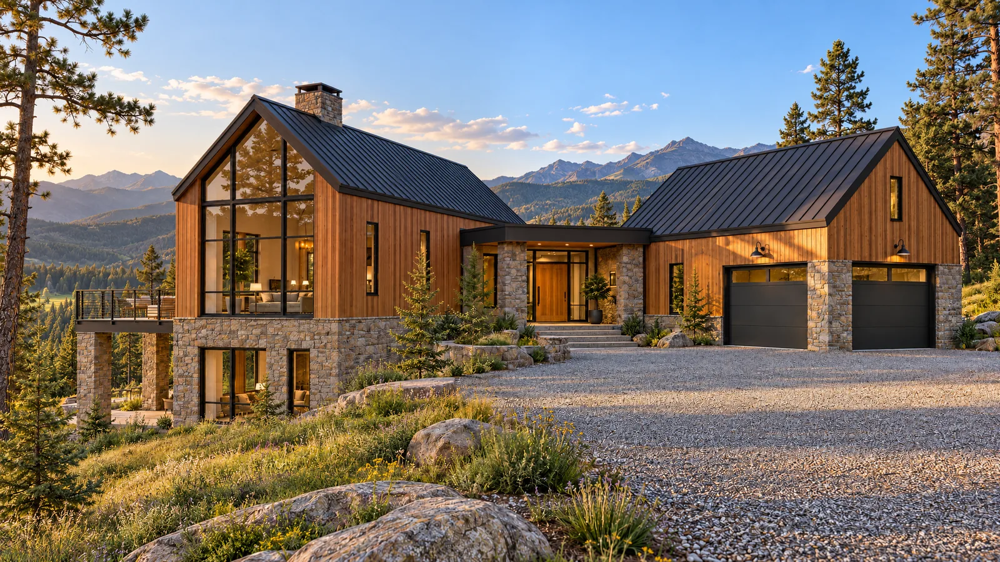
Private offering · 2026
Larkspur Ridge
The residence
Two cedar volumes set into the ridge and joined by a ribbon of glass. One gathers the family under a twenty-foot window of mountains; the other takes the cars, the skis and the mud.
- Bedrooms
- 3
- Baths
- 3.5
- Sq ft interior
- 2,800
- Levels
- 2
- Garage
- 2-car
- Acres
- 1.2
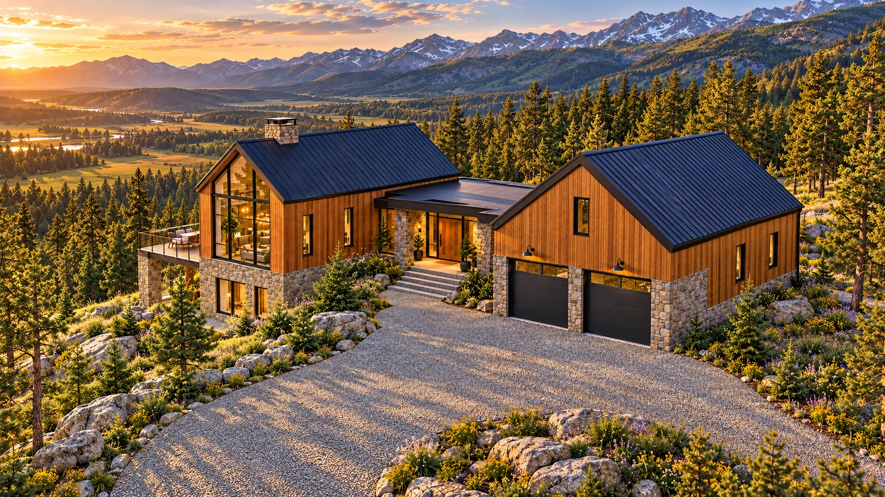
The approach
01 / 03
Up through the pines
A gravel lane climbs through ponderosa pine to a level motor court, with the high peaks on the horizon.
02 / 03
The ridge line
Two cedar gables, one for living and one for arriving, set on a base of stacked fieldstone.
03 / 03
The threshold
A glass link joins the two volumes. Open the door, and the first thing you see is the view.
Cedar, stone and steel.
Four materials, chosen to weather well at nine thousand feet and to look better every year. Move across the picture to look closer.
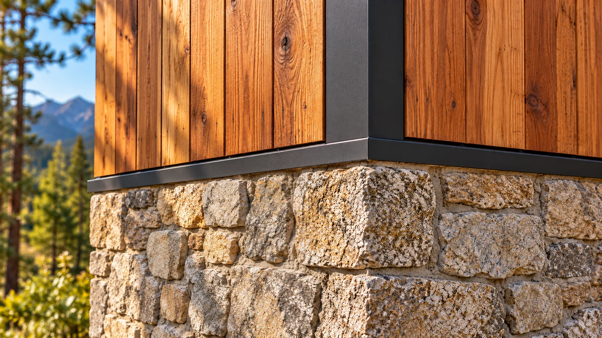
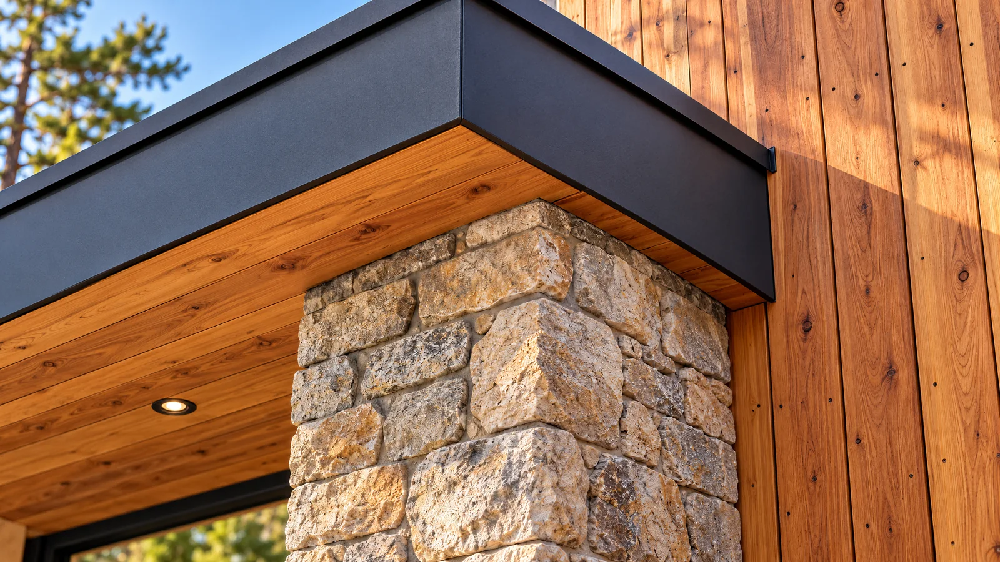
Inside
Rooms that face the range.
The great room, the kitchen and the primary suite all look west through floor-to-ceiling glass.
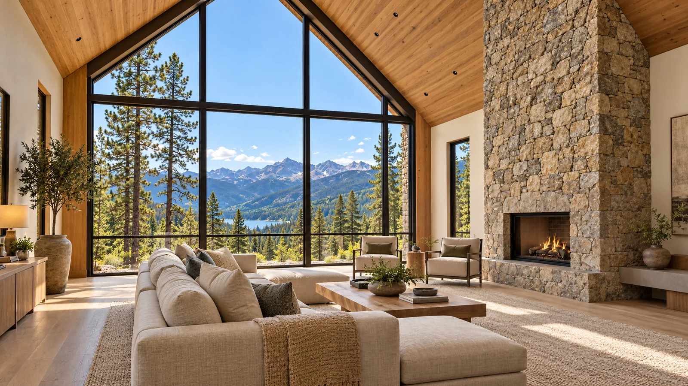
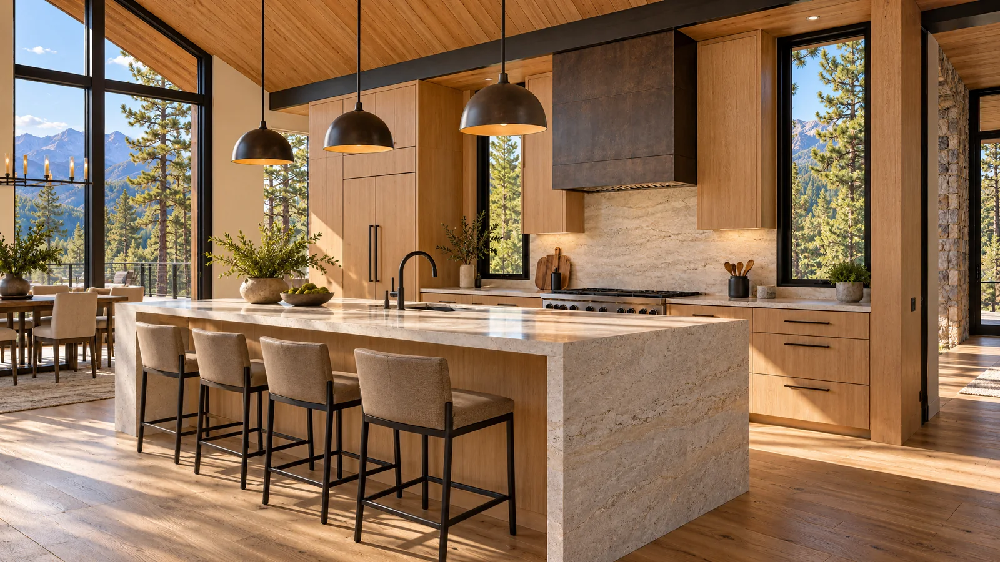
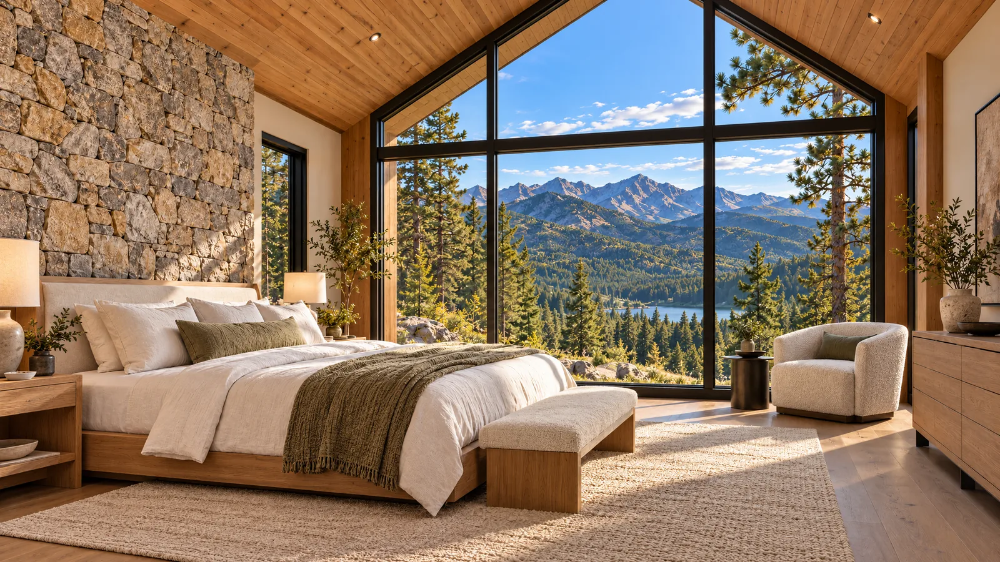
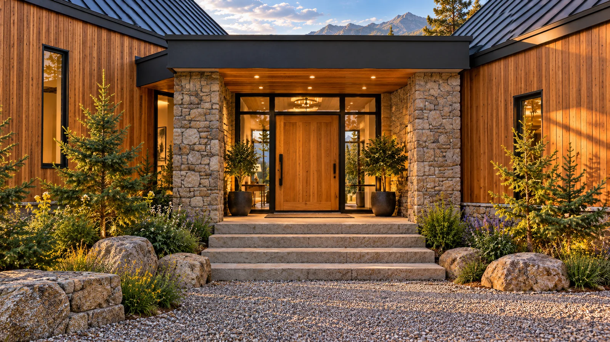
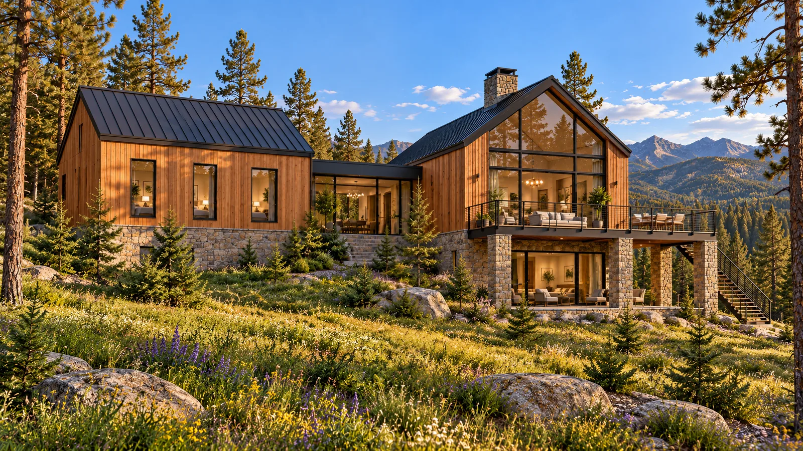
The meadow side
A cantilevered deck off the great room, a covered terrace below it, and wildflowers growing right up to the stone.
The site.
A level clearing on a south-facing slope, with the house turned so every principal room looks out to the range.
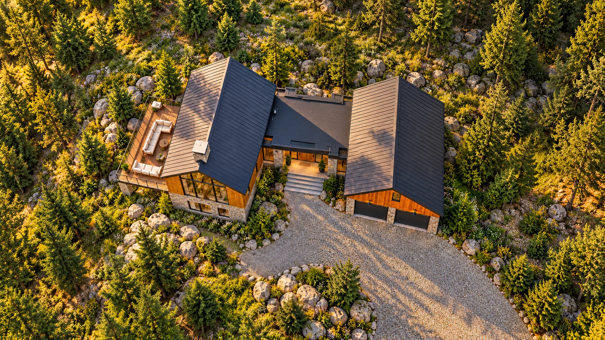
01Great room & deck02Glass link & entry03Garage & mudroom04Gravel motor court05Wildflower slopeGallery.
Every view, full size. Tap any picture to open it.
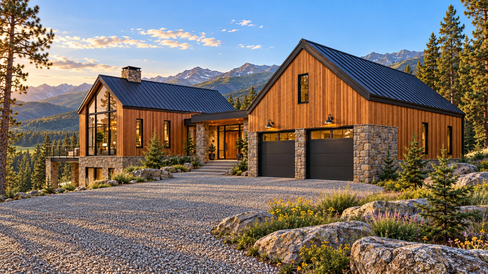
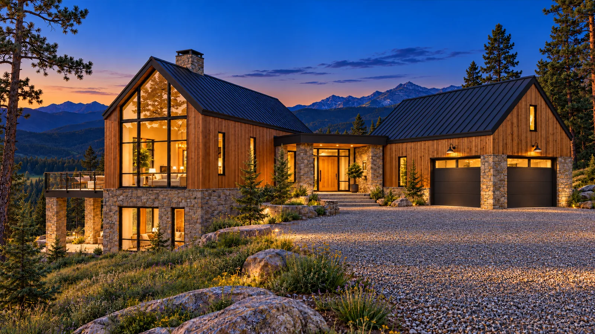
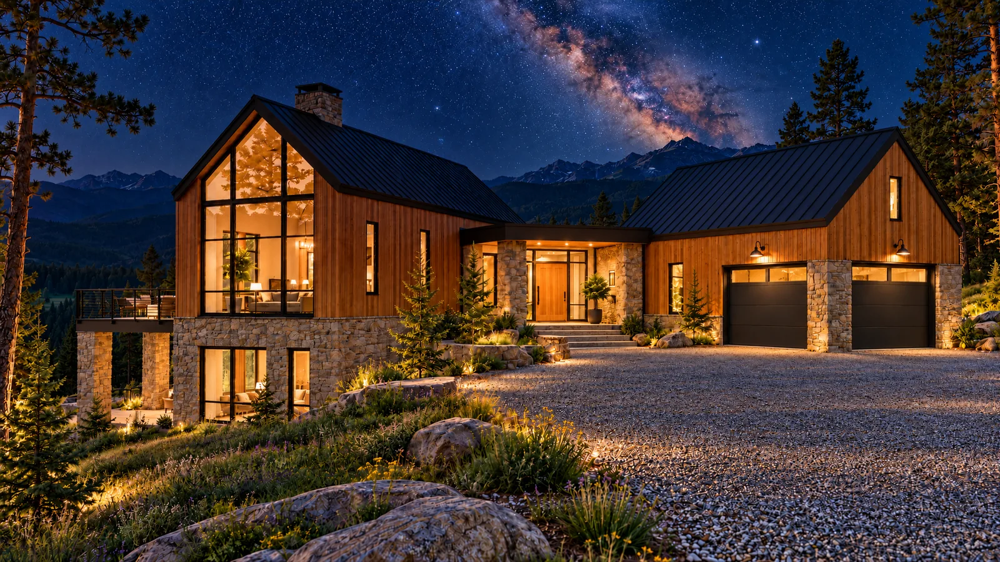
Private showings by appointment